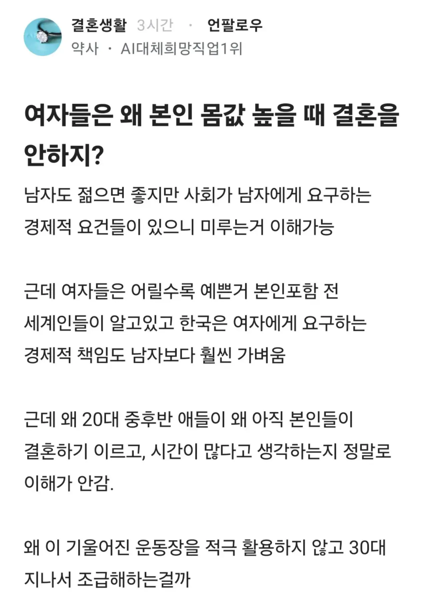

학력높을수록 결혼연령 높아지는데 개소리
자신을 상품이라 생각하면 고점에 매도하는게 맞죠
하지만 인생을 주체적으로 사는사람이라면 결혼하고 싶을때 하는게 맞지 않나요?
결혼이 인생의 목적이 아니니까
20대 여직원들한테 적당히 남자 사겨서 결혼 하라 소리 하면 보통 꼰대소리 듣는다 성희롱신고 안당하는것만으로도 감지덕지인 수준임 그냥 내비둬 지들인생
빠꼼이들은 이거 파악하고 20대 중반에 바로 결정사 가고 그러더라
여자도 20대중반쯤엔 또래만나고싶지 지금 고점이니까 나이많고 돈 많은 아저씨 만나서 결혼하라는거임? 이게 매매혼이랑 뭐가 다르냐 여기 돈보고 결혼하는 한녀들 욕하는 곳 아니었냐?
남 인생까지 최적화루트 고민처하고 앉아있네
음식을 사서 소비기한 내에 먹으면 되는건데
굳이 소비기한 아슬아슬할때까지 기다렸다가
이거 먹어도 되는건가요? 물어보는 사람 있으면
왜 그 전에 안 먹었음? 하고 물어보는거
결혼하고 음식 유통기한하고 비교하는게 레전드긴하네
ㄹㅇ 남자는 여자하기 나름일 정도로 ㅈㄴ 쉬운데 그걸 몰라 ㅉㅉ
이거 ㄹㅇ임
근데 나이먹은년들은 이걸 존나게 잘 아니까 자기 보짓값 지키려고 가스라이팅한거지
저것도 이제 커뮤에 퍼지고나면 여자들이 결혼 늦게하는건 남자탓이라고 또 남탓스킬 올라온다 ㅋㅋ
주식처럼 고점에서 익절이 힘듬.
손절 기간이 다가오면 조급해 하는거지.
여자는 혼자 결혼함? 남자들이 30대에 결혼하려 하잖아
아니면 20대 여자는 30대 남자랑 결혼해야 함?
30대남자가 결혼 능력있으면
20대여자랑도 가능한거지 ㅋㅋ
능력있는데 굳이 30대 여자랑 왜 함
혼인은 혹시나 갈라서면 끝인데 능력돼서 좋은 직업, 직장은 어쨌든 남지
쏙쓸 8달러할떄 샀냐? 삼전 7만원할떄 샀냐고ㅋㅋ
본인은 모름 그게 저점인지 고점인지
그리고 그때가 자기인생 최고점인거 아는 사람들도 가끔 있음 20중후반에 결정사 들어와서 나이차 상관없고 의사소개시켜달라는 애들
결정사 카페 다닐떄 종종 봄 아주머니들 거품물면서 연애 더 하라고 하지만 ㅋㅋ
여자도 젊은남자 좋아해..
능력보고 결혼할거면 젊은의대생 만나지 뭐하러 늙은의사를 만나?
댓글들 존나웃기네 ㅋㅋㅋ 20대에 연애를 하지 뭔 결혼부터 찾냐 니들도 젊었을 때로 돌려보내주면 연애 더 많이해보지 않겠음? 바로 아 결혼해야지 할거임? ㅋㅋㅋ
20대 남자가 아 나는 돈이없어서 결혼못해 하는 사람이 더 많을까 아직 여러 여자랑 연애해보고싶어서 결혼 안한다고 하는 사람이 더 많을까?
남자는 30대에 결혼하고 여자는 20대에 결혼해야하면 대체 몇살 연하를 만나야하는거임?
남자가 20대에 결혼헐생각을 안함.
그렇다고 20대 초중반에 30대중반 결혼준비된 남자랑
만날여자는 소수임.
약사 너도 지금 30대 지나서 약사됫으니 20대녀 타령하는거지 자기 20대중반 대학생일때 또래여자랑 결혼할 생각안햣잖아.
가장피크의 고점 25살여자는 10살많은 삼촌이랑 결혼하란거임?
20대 여자들은 눈이 없나..당연히 자기 또래 잘 생기고 멋진 사람 만나서 재밌게 연애하고 싶지. 근데 보통은 그 나이대 남자 중에 결혼할 상황이 되는 사람이 잘 없고.
이성적으로는 약사 말이 맞지만 20대에 자기 가치를 정량적으로 보고 평생을 함께할 반려자 선택에 반영할 이성적인 사람이 얼마나 되겠나 싶음.
내주변도르만 생각해도 20대 중반 만으로 24살에 결혼한 내동생이랑 우리 와이프는
결혼할때 남자쪽에서 아무것도 원하지 않더라
자기맘임
무슨 주식매매하나 결혼이 인생목표도 아니고 걍 지꼴릴때 가는거지. 인생 값어치를 저런걸로 계산할라하노
한참 신고점 찍어가는데 손털고 나오라는것도 존나 웃기네 ㅋㅋ
가지고있는 자산은 전부 상투에만 털고 나올 자신있나
글 내용은 하락만 남은게 만고의 진리인데 왜 수익실현 안하고 방관하냐는거임.
고점갱신 가능성이 0%인데 주식 물고있으면 그게 병신이지
그래도 되니까 그러지 별 이유가 있겠슴..
이쁘고 똑똑한 여자애들은 24-26살에 의사랑 약혼까지 다 하더라